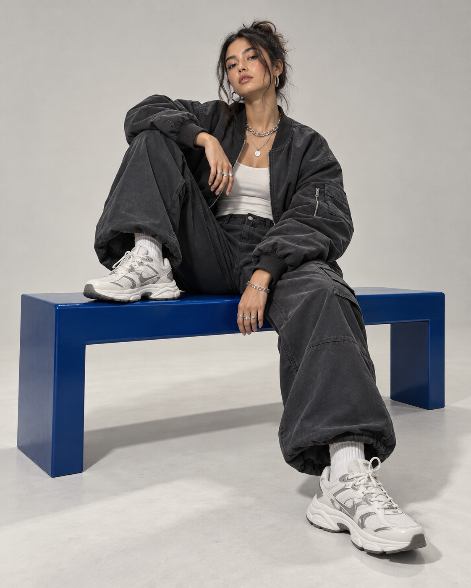

RITMO STORIES / 004
LA CIUDAD
NO SE DETIENE
23.10.2026 — 4 MIN

ENSAYO VISUAL
VESTIR EL
MOVIMIENTO.
La ropa urbana nació para responder a la ciudad. Esta edición explora una nueva uniformidad: capas sueltas, superficies técnicas y colores capaces de cortar el ruido.

LOOK 01
VOLUMEN
CONTROLADO

LOOK 02